Drive Radio
Без докосване. Само карай. No tapping. Just drive.
Качваш се, телефонът се свързва с колата и твоето радио стартира само. Drive Radio се грижи музиката да е винаги с теб, без да се налага да мислиш за нея. Get in, your phone connects to the car and your radio starts on its own. Drive Radio keeps the music with you, without you having to think about it.

Слушането е безплатно. Premium добавя удобства. Listening is free. Premium adds convenience.
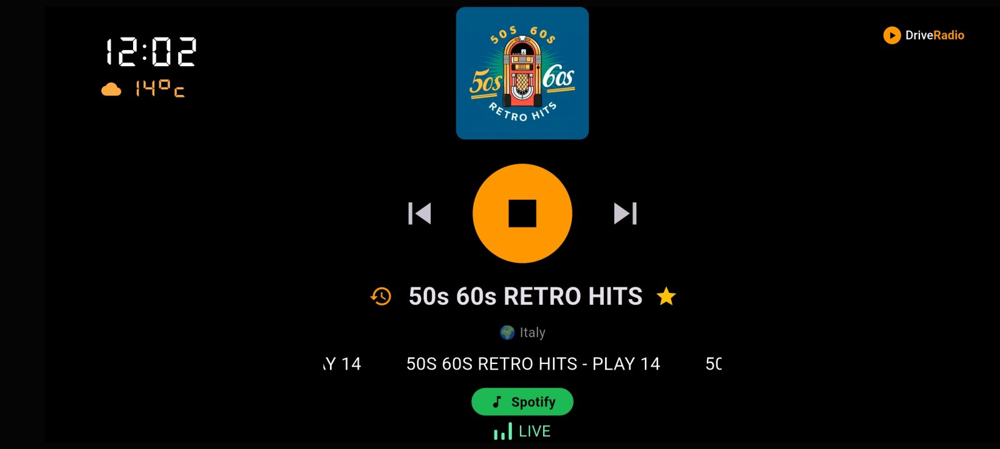
Твоите радиа в твоята кола Your stations, in your car
Drive Radio е направено за едно нещо: да слушаш любимите си станции в колата, без да докосваш телефона. Ето как. Drive Radio is built for one thing: listening to your favorite stations in the car without touching your phone. Here is how.
Качваш се и радиото стартира самоGet in and the radio starts by itself
Веднъж настройваш колата си и щом телефонът се свърже с нея по Bluetooth, Drive Radio прави това, което си избрал, и пуска последно слушаната станция. Не е нужно да отключваш телефона, да търсиш приложението или да натискаш Play. Set up your car once, and as soon as the phone connects to it over Bluetooth, Drive Radio does what you chose and plays the last station you listened to. No unlocking, no looking for the app, no pressing Play.
- Работи и при заключен телефонWorks with the phone locked
- Едно устройство безплатно – кола, слушалки или колонка; повече с PremiumOne device for free – car, headphones or speaker; more with Premium
- При слизане музиката спира самаWhen you get out, the music stops by itself
Добавяш своите станции, както ти е удобноAdd your stations the way you like
Търсиш радио по име в каталог с хиляди станции от цял свят и филтрираш по държава. Ако станцията я няма, отваряш сайта ѝ във вградения браузър и натискаш Play: потокът се улавя автоматично. Можеш да поставиш и адреса на потока или цял списък наведнъж. Search by name in a catalog of thousands of stations from around the world and filter by country. If a station is not there, open its website in the built-in browser and press Play: the stream is picked up automatically. You can also paste the stream address or a whole list at once.
- Без ограничение на любимитеNo limit on favorites
- Подреждаш ги, както искашArrange them the way you want
- Списък с адреси или M3U файлA list of addresses or an M3U file
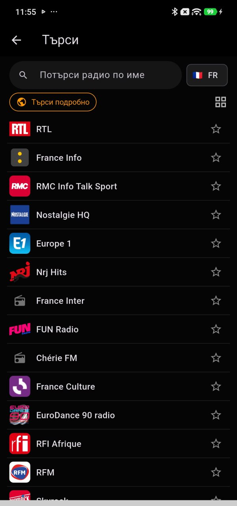
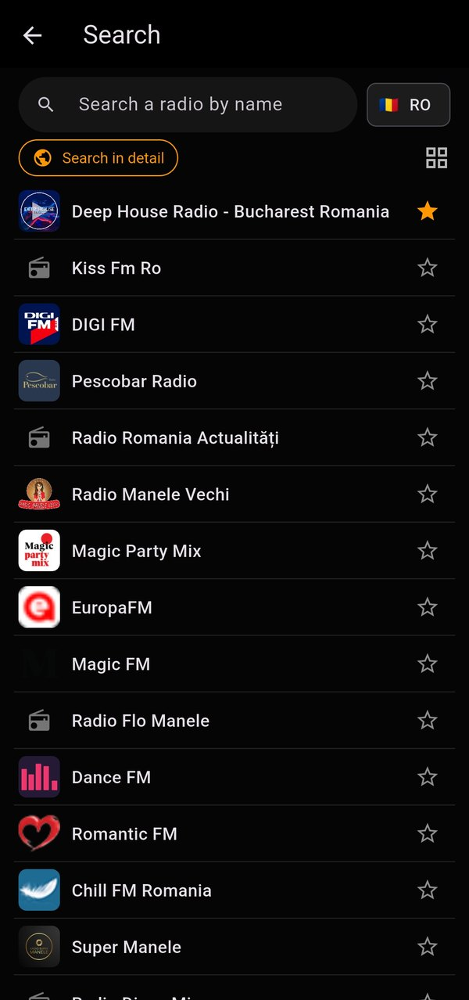
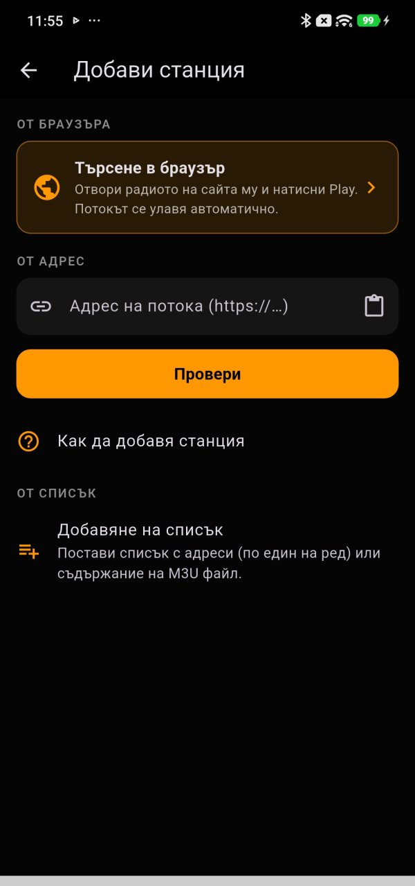
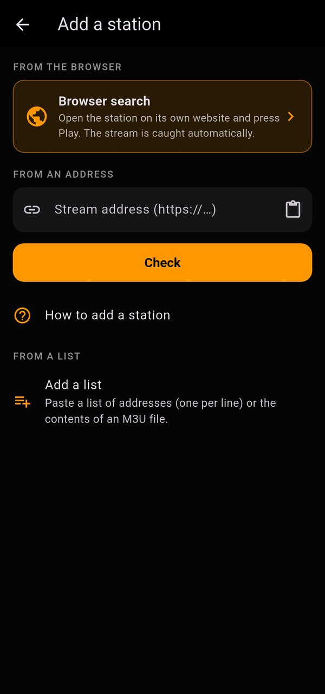
Знаеш какво звучи и го намираш с едно докосванеKnow what is playing and find it with one tap
Под станцията виждаш изпълнителя, песента и обложката. Хареса ли ти, докосваш бутона и песента се отваря в любимата ти музикална платформа, където можеш да продължиш да я слушаш. Не успя да я видиш? Drive Radio помни всяка песен, която си слушал. Докосваш малкия часовник пред името на станцията и я намираш в историята. Under the station you see the artist, the song and the cover. Like it? Tap the button and the song opens in your favorite music platform, where you can keep listening to it. Missed it? Drive Radio remembers every song you listened to. Tap the small clock in front of the station name and find it in the history.
- Spotify, YouTube Music, YouTube, Apple Music, Deezer, Tidal
- Избираш платформата веднъж в настройкитеPick your platform once in the settings
- История: последните 3 песни безплатно, цялата история с търсене – с PremiumHistory: the last 3 songs for free, the full searchable history with Premium
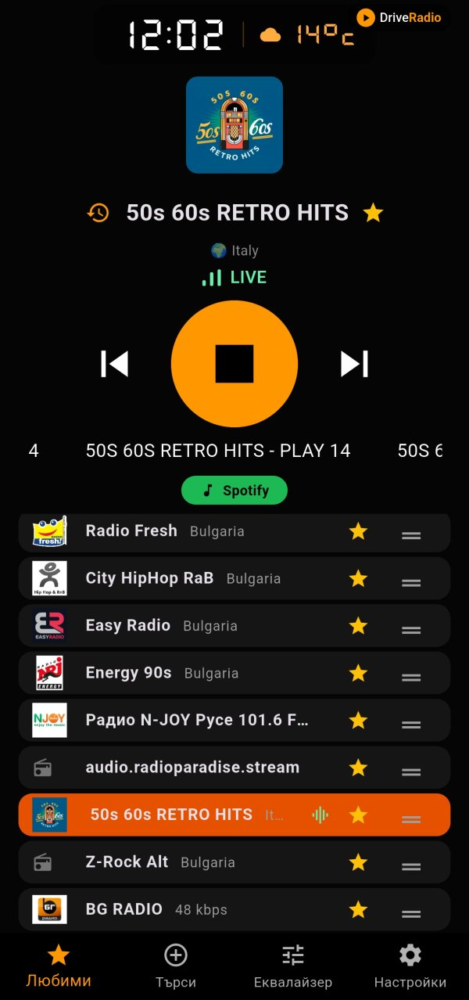
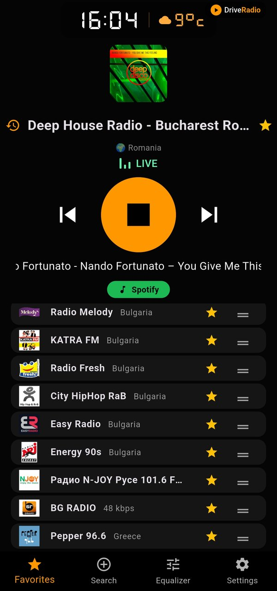
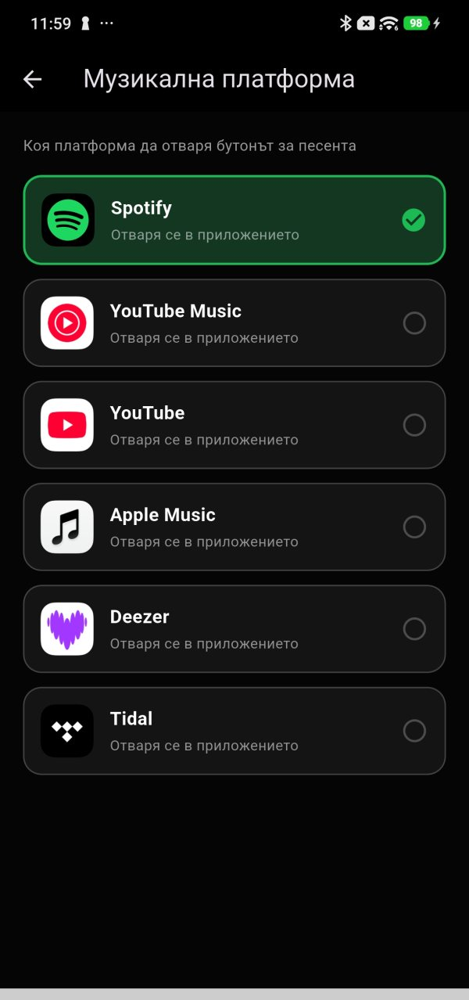
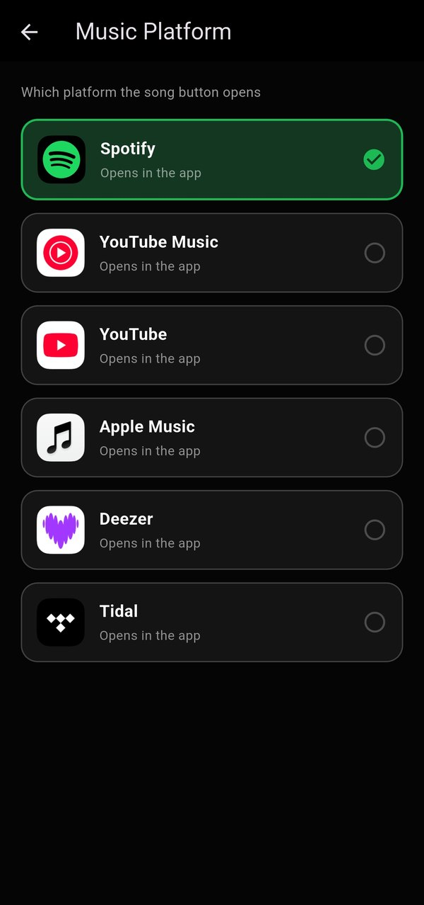
Екран, направен за колатаA screen made for the car
Сложиш ли телефона хоризонтално на стойката, Drive Radio показва голям часовник, температурата навън и големи бутони, които се натискат лесно в движение. Любимите станции са до плеъра, а с Premium, докато си свързан с колата, имаш и бързи бутони за навигация, музика и телефон. Put the phone in landscape on the mount and Drive Radio shows a big clock, the outside temperature and large buttons that are easy to hit while driving. Your favorites sit next to the player, and with Premium, while connected to the car, you also get quick buttons for navigation, music and phone.
- Станциите се сменят и от бутоните на воланаChange stations from the steering wheel buttons too
- Работи с Android AutoWorks with Android Auto
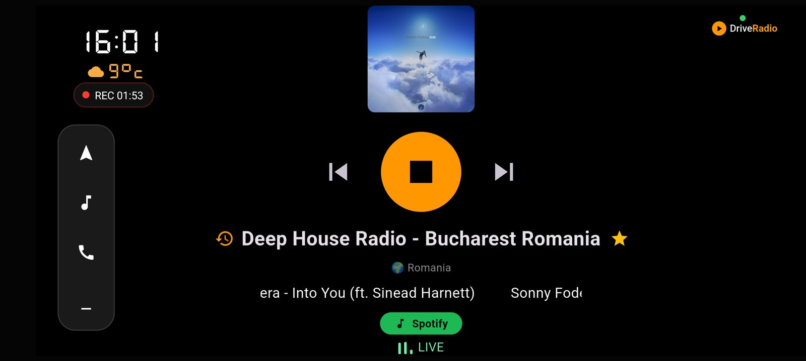
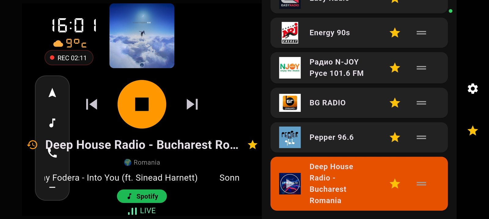
Слушаш и записваш пътяListen and record the road
Drive Radio може да записва пътя с камерата на телефона, докато свири радиото. Отвориш ли навигацията, над картата остават малкият бутон с песента и броячът REC. Управляваш музиката, без да излизаш от картата, а двете можеш да преместиш с пръст където ти е удобно, за да не закриват пътя. Drive Radio can record the road with the phone's camera while the radio plays. Open your navigation and a small song control and a REC counter stay on top of the map. You control the music without leaving the map, and you can drag both with your finger to wherever suits you, so they don't cover the road.
- Пауза и следваща станция от плаващия бутонPause and next station from the floating control
- Записът може да стартира сам, щом телефонът се свърже с колатаRecording can start on its own when the phone connects to the car
- При силен удар клипът се запазва самAfter a hard impact, the clip is saved on its own
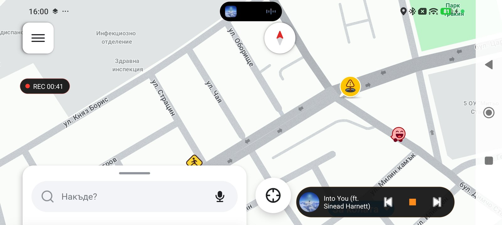
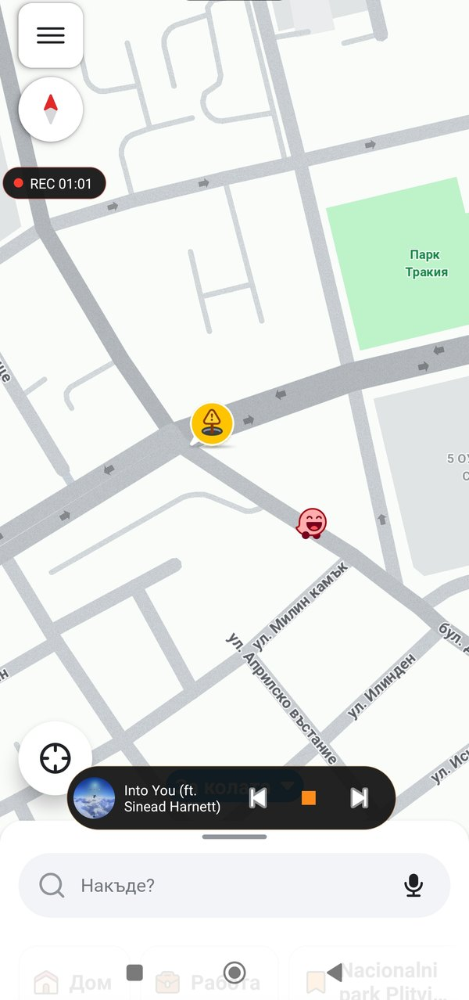
Слушай и от компютъраListen on your computer too
На работа или вкъщи отваряш уеб плеъра в браузъра и слушаш същите станции. Търсиш по име, държава или стил, или поставяш адреса на потока. Работи на компютър и на телефон, включително iPhone, с бутони и на заключения екран. At work or at home, open the web player in your browser and listen to the same stations. Search by name, country or style, or paste the stream address. It works on a computer and on a phone, iPhone included, with controls on the lock screen too.
Отвори уеб плеъраOpen the web player- Слушането е безплатно, а любимите се пазят в браузъраListening is free, and your favorites are kept in the browser
- С Premium списъкът е общ с телефона: добавиш станция на едното място и тя се появява и на друготоWith Premium the list is shared with your phone: add a station in one place and it appears in the other
- С Premium виждаш и песента, и историята на слушаните песниWith Premium you also see the song and the history of what you listened to
- Влизаш със същия профил като в приложениетоSign in with the same account as in the app
Таймер и еквалайзерTimer and equalizer
Таймер за сън и еквалайзер с готови настройки за звука.A sleep timer and an equalizer with ready-made sound presets.
История и синхронизацияHistory and sync
Цялата история на чутите песни и любимите на всичките ти устройства и в уеб плеъра.The full history of songs you heard, and your favorites on all your devices and in the web player.
На твоя езикIn your language
Български, английски, гръцки, румънски, сръбски, италиански, турски, руски и украински.Bulgarian, English, Greek, Romanian, Serbian, Italian, Turkish, Russian and Ukrainian.
Безплатно и Premium Free and Premium
Слушането никога не е платено. Premium е за тези, които искат колата да прави още повече сама. Listening is never paid. Premium is for drivers who want the car to do even more on its own.
Drive Radio БезплатноFree
- Твоите станции, без ограничениеYour stations, no limit
- Автоматичен старт с едно Bluetooth устройствоAuto-start with one Bluetooth device
- Песен, обложка и бутони за Spotify, YouTube и другиSong, cover and buttons for Spotify, YouTube and more
- Car Mode, Android Auto и бутони на воланаCar Mode, Android Auto and steering wheel buttons
- Таймер за сън и еквалайзерSleep timer and equalizer
- История на песните – виждаш последните 3, които си слушалSong history – see the last 3 songs you listened to
Drive Radio Premium
- Повече от едно Bluetooth устройствоMore than one Bluetooth device
- Навигацията се отваря сама при качванеNavigation opens by itself when you get in
- Плаващ контрол над навигациятаFloating control over your navigation
- Записване на пътя с видеоTrip Recording with video
- Любимите на всички устройства и в уеб плеъраFavorites on all your devices and in the web player
- Цялата история на песните, които си слушал, с търсенеThe full history of songs you listened to, with search
- Собствени настройки на еквалайзераYour own equalizer presets
Drive Dashcam
Видеорегистратор в телефона A dash cam in your phone
Видеорегистратор, който стартира сам, щом се качиш в колата. Без реклами, а видеото остава на телефона ти. A dash cam that starts on its own when you get in the car. No ads, and the video stays on your phone.
Всичко важно е върху видеотоEverything that matters, on the video
Телефонът става видеорегистратор, който записва пътя на кратки клипове. Върху всеки кадър се виждат скоростта, датата, часът, координатите и улицата. Когато мястото свърши, най-старите клипове се изтриват сами, а колко място да заемат записите избираш ти. Ако телефонът започне да се затопля, качеството се намалява само, за да продължи записът. Your phone becomes a dash cam that records the road in short clips. Every frame shows the speed, date, time, coordinates and street. When space runs out, the oldest clips are removed on their own, and you choose how much space recordings may use. If the phone starts to heat up, quality is lowered automatically so recording can go on.
- Хоризонтално или вертикално – екранът се завърта с телефонаLandscape or upright – the screen turns with the phone
- Бърза снимка и изключване на микрофона с едно докосванеQuick photo and mic off with one tap
- Пауза, когато колата стои дълго, и продължава, щом потеглишPauses when the car stands still for a long time, resumes when you drive off
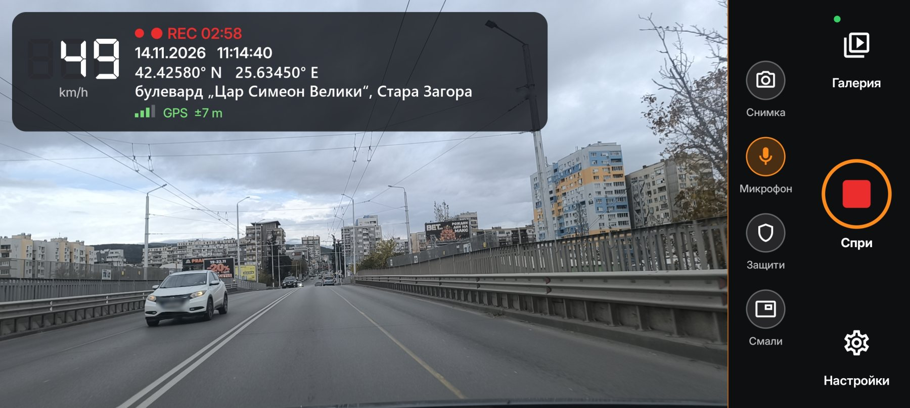
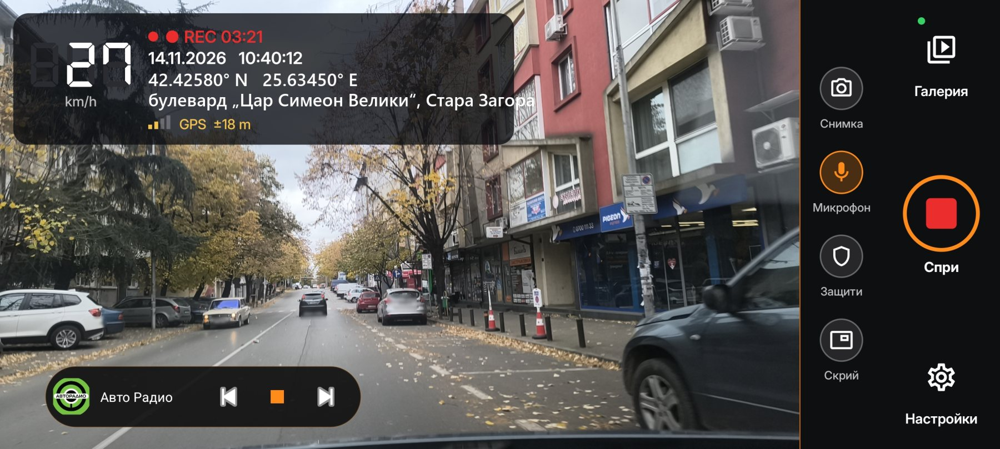
Качваш се и записът стартираGet in and recording starts
Избираш колата веднъж от списъка с Bluetooth устройства. Щом телефонът се свърже с нея, записът започва, а когато слезеш, изчаква 5, 15 или 30 секунди и спира. Кратко прекъсване на Bluetooth не спира записа. С Premium при свързване се отварят и навигацията, и музиката – ти избираш кое приложение е на екрана и кое остава във фона. You pick your car once from the list of Bluetooth devices. When the phone connects to it, recording starts; when you get out, it waits 5, 15 or 30 seconds and stops. A short Bluetooth drop doesn't stop the recording. With Premium, navigation and music open on connect too – you choose which app is on screen and which stays in the background.
- Сила на звука по твой избор при свързване (Premium)The volume of your choice on connect (Premium)
- Екранът не гасне, докато си свързан с колата (Premium)Screen stays on while connected to the car (Premium)
- При слизане музиката спира и приложенията се затварятWhen you get out, the music stops and the apps close
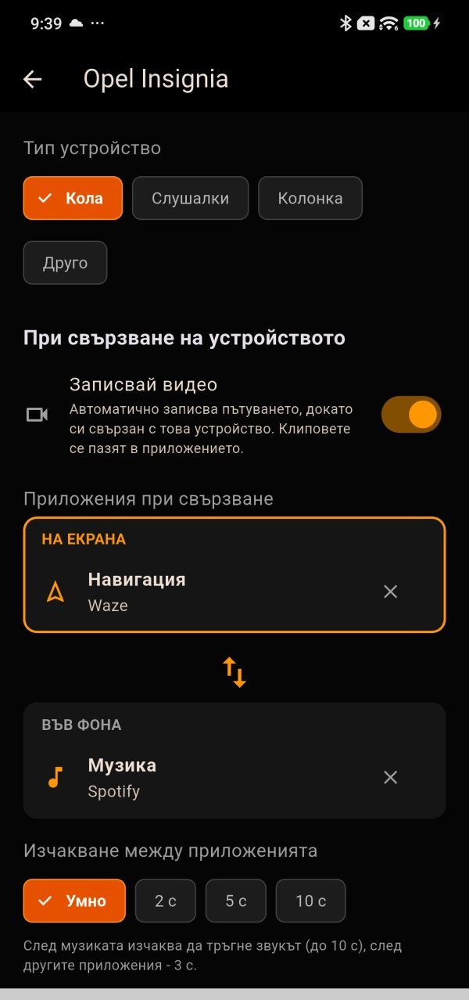
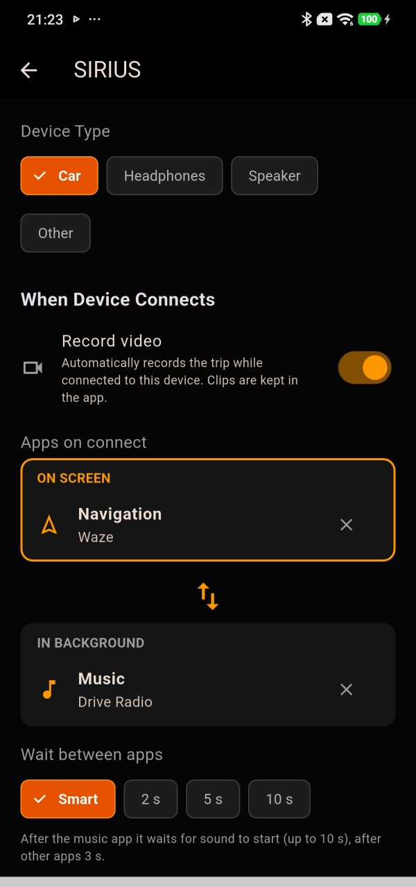
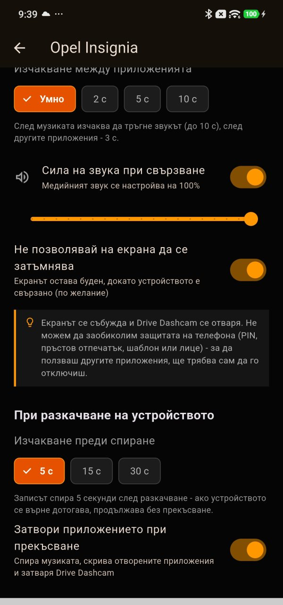
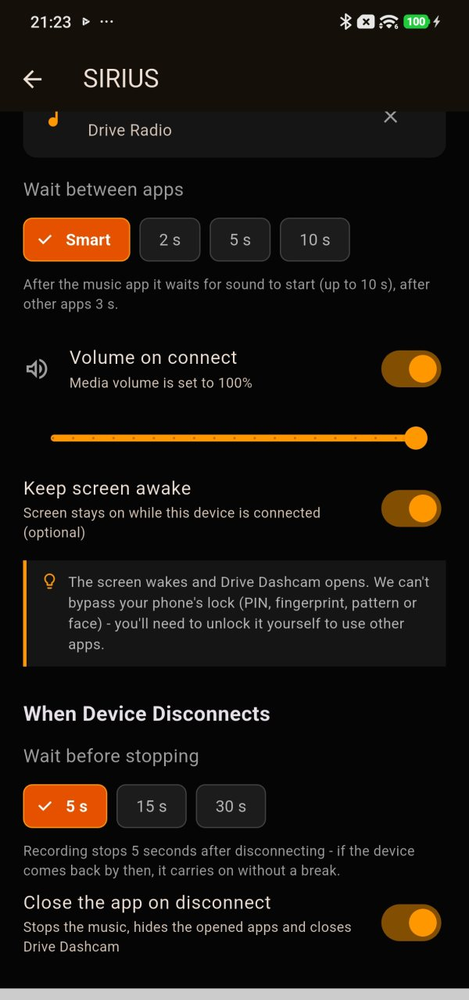
Важният клип оставаThe clip that matters stays
При силен удар клипът се запазва сам, заедно със следващия, за да не се изгуби нищо от случилото се. Ако видиш нещо, което искаш да пазиш, докосваш щита и клипът е защитен. Защитените клипове не се изтриват при презаписване – само ти можеш да ги махнеш. After a hard impact, the clip is saved on its own, together with the next one, so nothing of what happened is lost. If you see something you want to keep, you tap the shield and the clip is protected. Protected clips are never overwritten – only you can remove them.
- Чувствителност на удара: ниска, средна или високаImpact sensitivity: low, medium or high
- Кратка вибрация, когато клипът е защитенA short buzz when a clip is protected
- Защитените клипове са отбелязани в записитеProtected clips are marked in your recordings
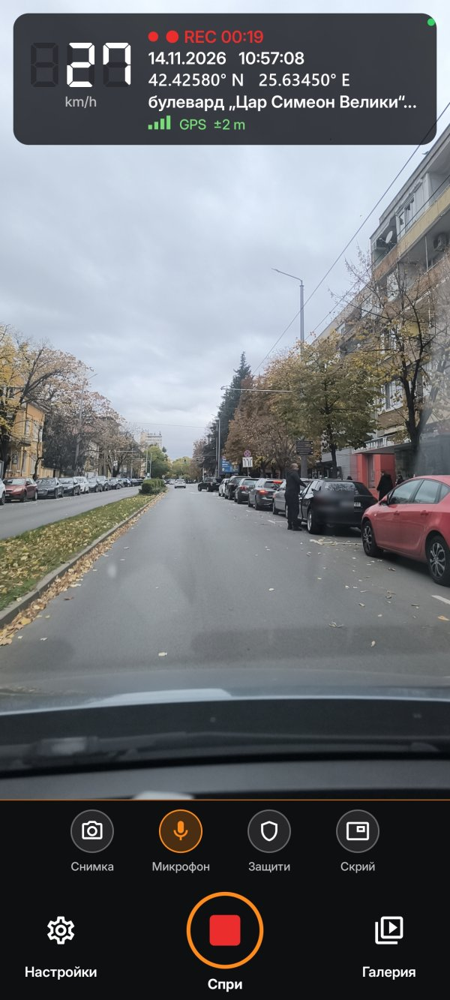
Записва, докато ползваш навигацияKeeps recording while you navigate
Отвориш ли Waze или Google Maps, записът продължава. Ти избираш как да виждаш, че тече: малък брояч REC над навигацията, малко прозорче с картината или камерата да остане на екрана. С Drive Radio управляваш музиката от плаващия ѝ бутон, без да напускаш записа. Open Waze or Google Maps and recording carries on. You choose how to see that it's running: a small REC counter over the navigation, a small picture window, or the camera staying on screen. With Drive Radio, you control the music from its floating button without leaving the recording.
- Брояч над всичко или прозорче – по твой изборA counter over everything, or a small window – your choice
- Работи с Drive Radio, Spotify и други плейъриWorks with Drive Radio, Spotify and other players
- Видеото остава на телефона – нищо не се качваThe video stays on your phone – nothing is uploaded
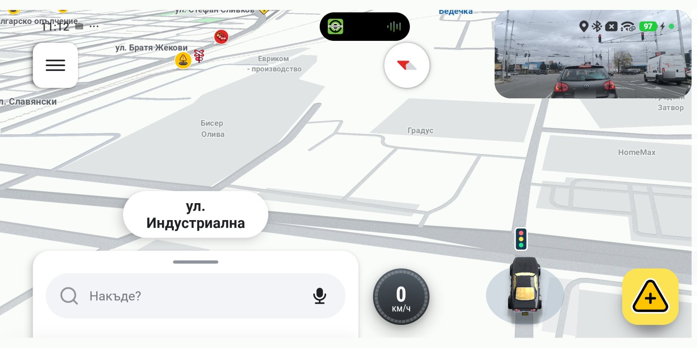
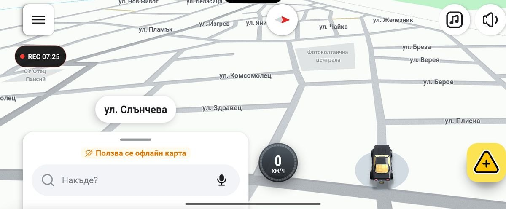
Всяко пътуване на картатаEvery trip on the map
Клиповете се подреждат по пътувания – с разстояние, средна и максимална скорост. Маршрутът е на картата, оцветен по скорост, а отдолу има графика. Докосваш място от пътя и клипът стартира точно от тази секунда, а цялото пътуване върви като едно видео. Clips are grouped into trips, with distance, average and top speed. The route is on the map, coloured by speed, with a graph below. Tap a spot on the route and the clip plays from that exact second, and the whole trip plays as one video.
- Споделяш клип или го запазваш в галериятаShare a clip or save it to your gallery
- Изрязваш само важните секунди (Premium)Cut just the seconds that matter (Premium)
- Дневник на пробега за Excel и маршрут за Google Earth и Strava (Premium)Mileage log for Excel, and routes for Google Earth and Strava (Premium)
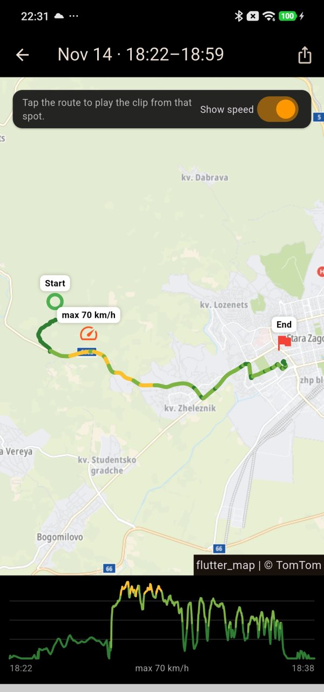
Записът и защитата са безплатни. Premium прави колата още по-самостоятелна. Recording and protection are free. Premium lets the car do even more on its own.
Drive Dashcam БезплатноFree
- Тръгва сам – при свързване с колата по Bluetooth записът започва, при слизане спира.Starts on its own – recording begins when the phone connects to the car over Bluetooth and stops when you leave.
- Пази важното – при удар или с едно докосване клипът се запазва и не се изтрива.Keeps what matters – after an impact, or with one tap, the clip is saved and never deleted.
- Скорост, час и място върху видеото.Speed, time and location on the video.
- Всяко пътуване на картата – докоснеш място и клипът стартира оттам.Every trip on the map – tap a spot and the clip plays from there.
- Не ти пречи – докато ползваш навигация, записва в малко прозорче или като малък брояч.Stays out of the way – while you navigate, it records in a small window or as a tiny counter.
- Записва непрекъснато – най-старите клипове се изтриват сами, когато мястото свърши.Records non-stop – the oldest clips are removed on their own when space runs out.
Drive Dashcam Premium
- Отваря сам музиката и навигацията при свързване, със сила на звукаOpens your music and navigation on connect, with the volume set
- Повече от една колаMore than one car
- Изрязваш и споделяш само важните секундиCut and share just the seconds that matter
- Дневник на пробега с износ за Excel и маршрут за Google Earth и StravaMileage log with Excel export, and routes for Google Earth and Strava
- Свой надпис върху видеото, например номера на колатаYour own text on the video, e.g. the car's plate